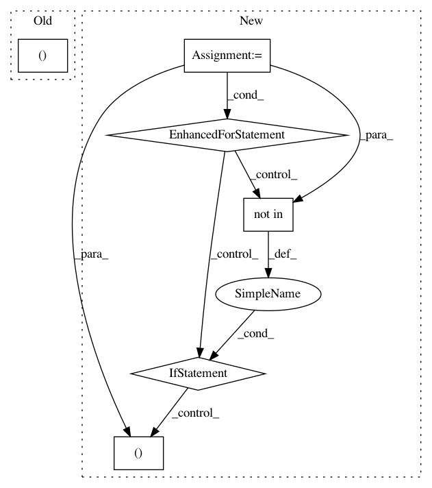

b7990885d8b26b9404fd9ce952b0b2f005019594,california_housing/feature_engineering.py,,,#,23
Before Change
train_set.plot(kind="scatter", x="longitude", y="latitude", alpha=0.4,
s=train_set["population"]/100, label="population", figsize=(10,7),
c="median_house_value", cmap=plt.get_cmap("jet"), colorbar=True)
plt.legend()
plt.show()
After Change
city_coords = {}
for dat in city_lat_long.iterrows():
row = dat[1]
if row["Name"] not in city_pop_data["City"].values:
continue
else:
city_coords[row["Name"]] = (float(row["Latitude"]), float(row["Longitude"]))
//clean pop
//fill in the missing 1980s values with avg rate of change
//make a dictonary of cities lat/long pass in a tuple of lat/longs
//for a given point and do the comparison
//two functions
/Ǘ. take two lat long tuples as input
//return the distance between the two
//vincenty(tuple1, tuple2)
//example below
newport_ri = (41.49008, -71.312796)
cleveland_oh = (41.499498, -81.695391)
x = vincenty(newport_ri, cleveland_oh)
x //distance stored in km, see units on printing
In pattern: SUPERPATTERN
Frequency: 3
Non-data size: 6
Instances
Project Name: CNuge/kaggle-code
Commit Name: b7990885d8b26b9404fd9ce952b0b2f005019594
Time: 2018-01-12
Author: nugentc@uoguelph.ca
File Name: california_housing/feature_engineering.py
Class Name:
Method Name:
Project Name: nicodv/kmodes
Commit Name: 6b8fd96888fd95e82e010837439a84a3e7487336
Time: 2016-10-16
Author: njdevos@gmail.com
File Name: kmodes/tests/test_common.py
Class Name:
Method Name: test_non_meta_estimators
Project Name: unitedstates/congress-legislators
Commit Name: 0c7eceb6693d5538f66b6375a8747e2677180ccd
Time: 2016-11-10
Author: jt@occams.info
File Name: test/validate.py
Class Name:
Method Name: check_id_types